smile/spec
smile/spec
one spec, many guns.
The M4 program: one brief goes out, every vendor answers it their own way. Six scenes × three structural answers each — same brand, same copy, same smoothness law, zero shared skeletons. Bento desk, terminal boot, side rail · DVD physics, away console, ticket booth · rundown sheet, halftime board, filmstrip · status page, reconnect lab, repair bench · transmission feed, town hall, caller board · closing bell, receipt print, credits crawl.
STARTING SOON
?t=90|ISO · ?ep= — hold the room before the bell
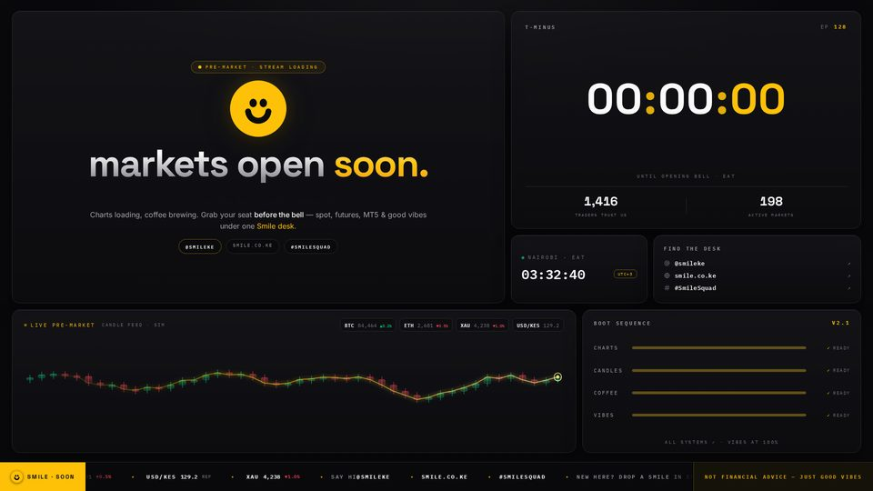
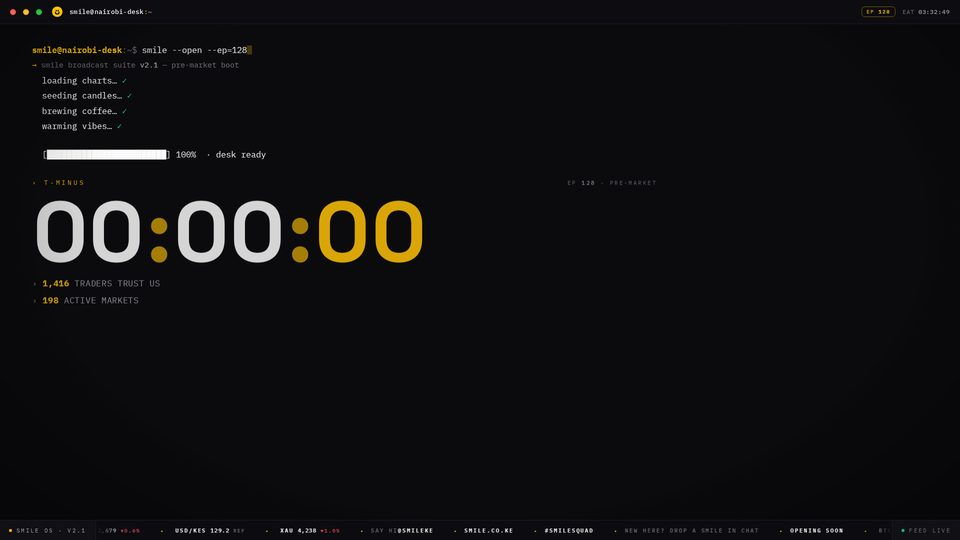
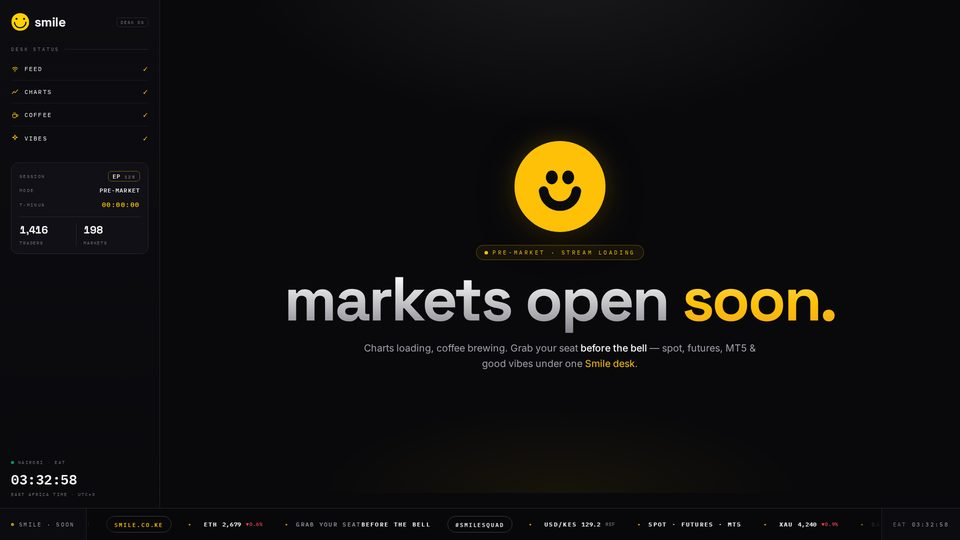
BE RIGHT BACK
?elapsed= — positions paused, room kept alive
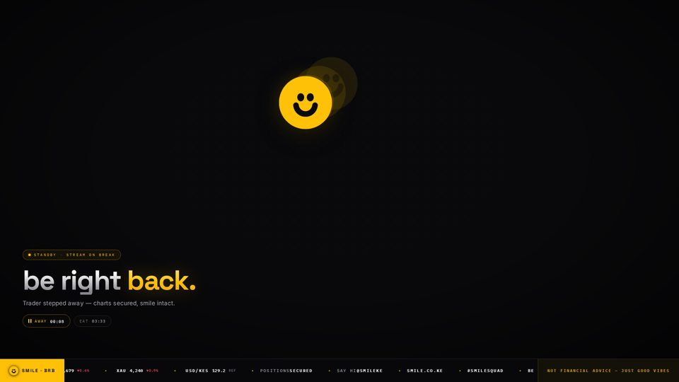
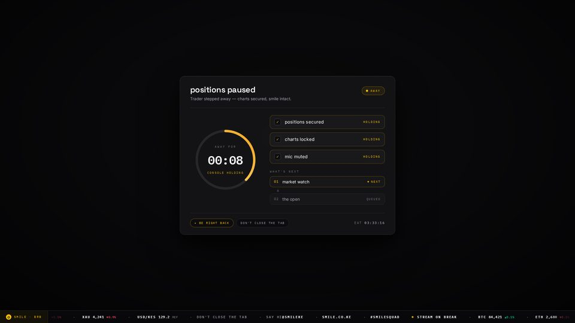
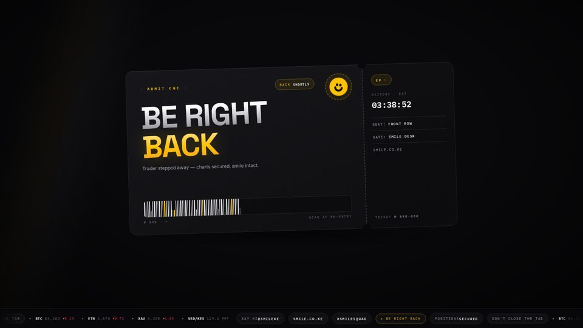
INTERMISSION
?t= back-at countdown · ?ep= — the longer break
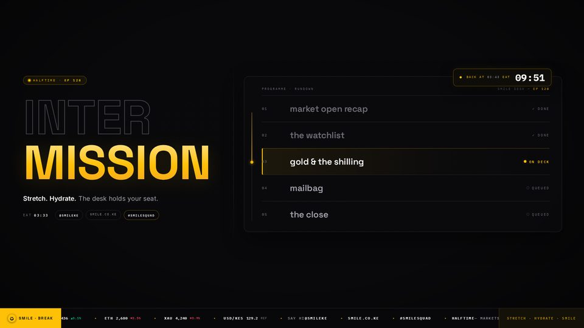
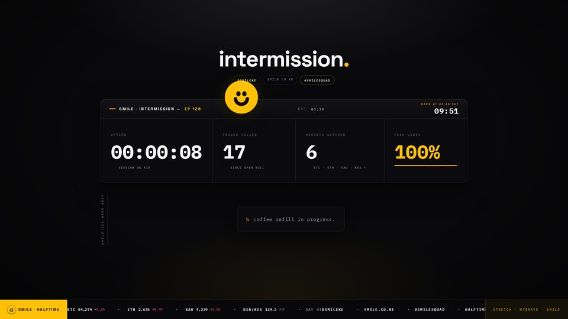
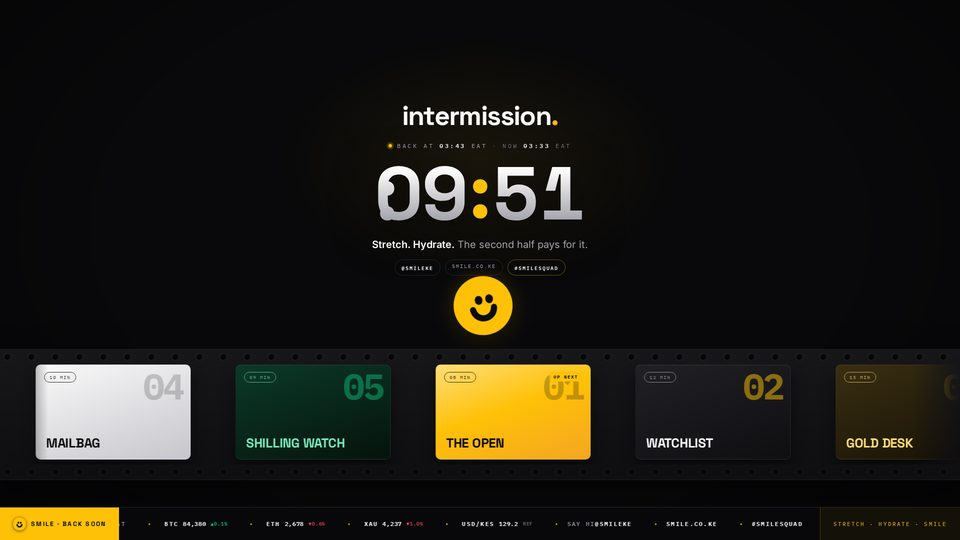
TECHNICAL DIFFICULTIES
?elapsed= — feed hiccup, desk on it


Q&A · OPEN FLOOR
?ep= — comms open, channel 01


SESSION CLOSED
the sign-off — three ceremonies
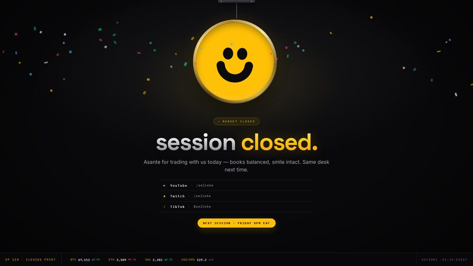
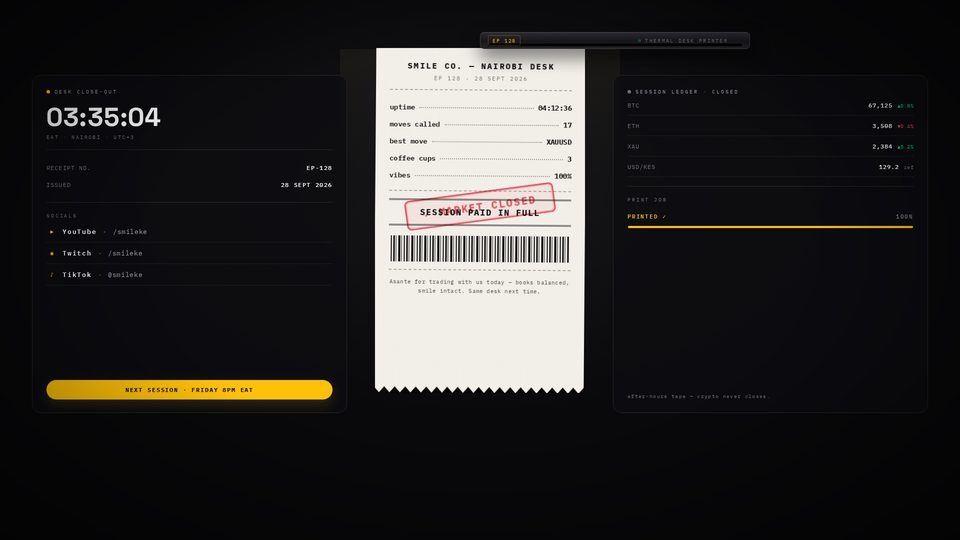
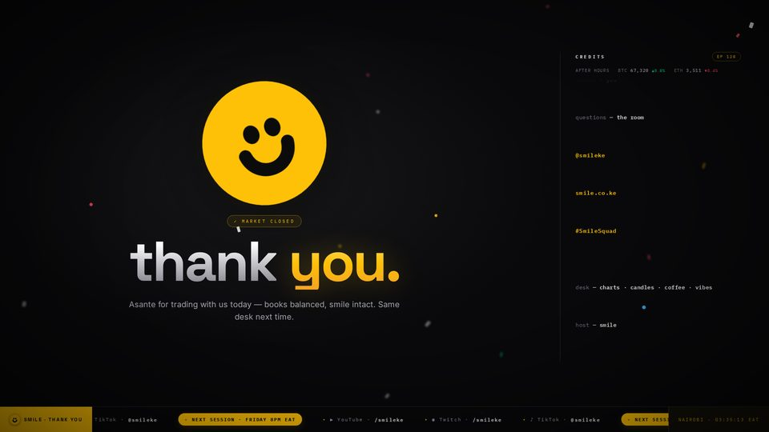